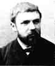

Henri Poincaré can be said to have been the originator of algebraic topology and of the theory of analytic functions of several complex variables.
Poincaré entered the Ecole Polytechnique in 1873 and continued his studies at the Ecole des Mines, as a student of Charles Hermite, from which he received his doctorate in mathematics in 1879. He was appointed to a chair of mathematical physics at the Sorbonne in 1881, a position he held until his death.
Before the age of 30 he developed the concept of automorphic functions which he used to solve second order linear differential equations with algebraic coefficients. His Analysis situs, published in 1895, is an early systematic treatment of topology. Poincaré can be said to have been the originator of algebraic topology and of the theory of analytic functions of several complex variables. He also worked in algebraic geometry and made a major contribution to number theory with work on Diophantine equations.
In applied mathematics he studied optics, electricity, telegraphy, capillarity, elasticity, thermodynamics, potential theory, quantum theory, theory of relativity and cosmology. He is often described as the last universalist in mathematics.
In the field of celestial mechanics he studied the three-body-problem, and theories of light and electromagnetic waves. He is acknowledged as a co-discoverer, with Albert Einstein and Hendrik Lorentz, of the special theory of relativity.
His major works include Les Méthods nouvelle de la méchanique celeste in three volumes published between 1892 and 1899 and Lecons de mecanique celeste (1905). In the first of these he aimed to completely characterise all motions of mechanical systems. He invoked an analogy with fluid flow. He also showed that previous series expansions used in studying the 3-body problem were convergent, but not in general uniformly convergent, so putting in doubt the stability proofs of Lagrange and Laplace.
He also wrote many popular scientific articles including Science and Hypothesis (1901), Science and Method (1908), and The Value of Science (1904). A quote from Poincaré is particularly relevant to this collection on the history of mathematics. In 1908 he wrote
The true method of foreseeing the future of mathematics is to study its history and its actual state.
The Poincaré conjecture is as one of the most baffling and challenging unsolved problems in algebraic topology. Homotopy theory reduces topological questions to algebra by associating with topological spaces various groups which are algebraic invariants. Poincaré introduced the fundamental group to distinguish different categories of two-dimensional surfaces. He was able to show that any 2-dimensional surface having the same fundamental group as the two-dimensional surface of a sphere is topologically equivalent to a sphere. He conjectured that the result held for 3-dimensional manifolds and this was later extended to higher dimensions.
Surprisingly proofs are known for the equivalent of Poincaré's conjecture for all dimensions strictly greater than 3. No complete classification scheme for 3-manifolds is known so there is no list of possible manifolds that can be checked to verify that they all have different homotopy groups.
Poincaré was first to consider the possibility of chaos in a
deterministic system, in his work on planetary orbits. Little
interest was shown in this work until the modern study of chaotic
dynamics began in 1963.